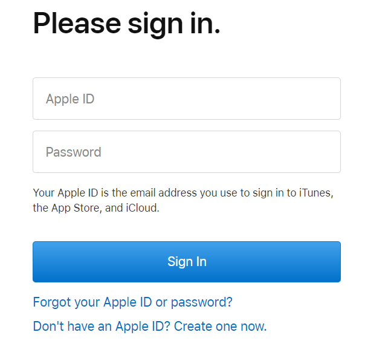

Inorder to download the Trello app on Mac you must first have a apple account,
if you do not set one up now (Figure 1).
Figure 1: Apple Store Account

Once you have an account you can search for Trello in the apple store or in a
web browser or your choosing search for the Trello desktop app.
Find the version you need, if you are using Mac download Mac/Apple version, for
these instrucions we will be following Mac parameters (Figure 2).
Figure 2: Version Selection
If you are downloading from a web browser you will be prompted to sign in to
your apple account now, once you have signed into the apple store you can
continue to download the application. If you are already within the apple store
you will begin downloading now.
After it is finished downloading, the appplicaion will run, click continue,
then either select login or signup. if you already have a Trello account go
ahead and login.
Once you are finished you can now access Trello from the application instead of
the web browser.